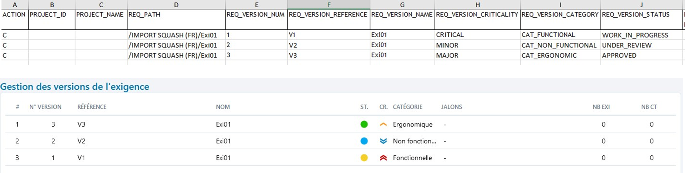
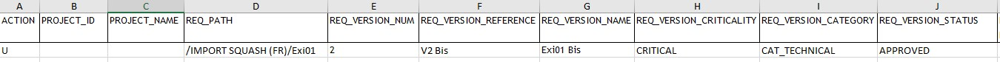
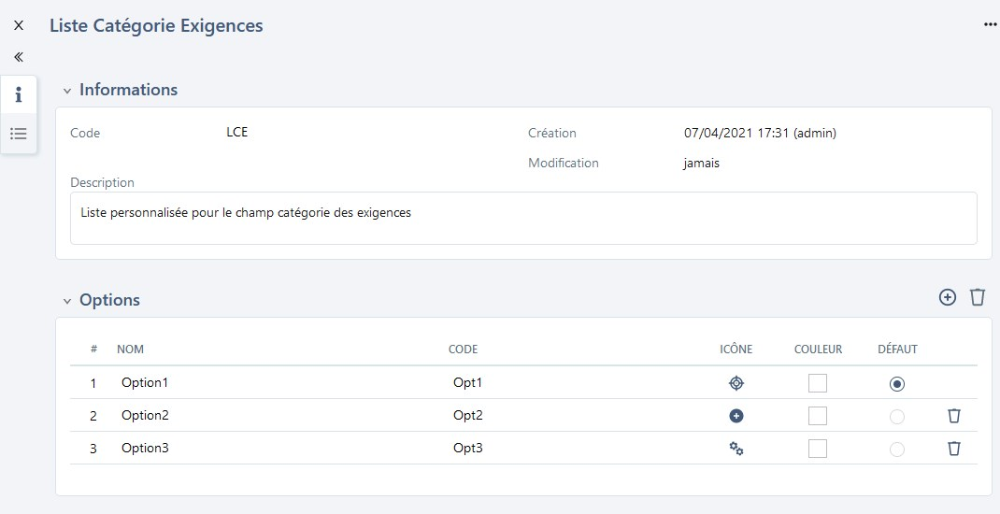

Importing Requirements
Squash TM allows you to import a tree of requirements from an .XLS file.
To import requirements, you must complete an Excel file by following the procedure on Renseigner un fichier d'import d'exigences. Then, you can import this Excel file by using the **[Import] option in the Requirements workspace. It is possible to simulate the import to verify the coherence of the import file before importing it.
En savoir plus
For more details on this procedure, please visit this page: Importer/Exporter un objet.
Completing a Requirements Import File
Importing requirements via an Excel file allows you to mass create or modify a portfolio of requirements. You can import requirements, their attributes as well as associated items (requirements and test cases).
This feature is very useful, especially in these cases: - when you have to migrate requirements from a third-party tool; - when you have to retrieve a portfolio of specifications from an existing document; - when you have to mass modify requirements already in Squash TM.
In Squash TM, you can import a tree of requirements from an .xls, .xlsx, or .xlsm file.
Info
The import feature is available to "Admin" and "Project Manager" profiles.
You can download an import template from the pop-up import in the Requirements space.
Import File Structure
The import file is composed of three tabs: REQUIREMENT, LINK_REQ_TC and LINK_REQ_REQ
- The REQUIREMENT tab allows you to enter the information related to the requirements to import such as location, description, criticality, etc.;
- The LINK_REQ_TC tab allows you to enter the information to link requirements to case tests already in Squash;
- The LINK_REQ_REQ tab allows you to enter the information to link requirement versions to each other (either already in Squash, or in an import file).
Focus
The import file must follow the following rules:
- The name of the 3 tabs must not be changed;
- The headings of columns must not be changed;
- The blank rows must not be interpreted;
- The cells must not be merged;
- The order of the rows does not mattter;
- The import is done row by row.
REQUIREMENT Tab
| Name of the column | Description | Expected value |
|---|---|---|
| ACTION | Value that indicates the action that you want to do. | Required Field C: to create (Create) U: to update (Update) |
| PROJECT_ID | Destination project ID | Ignore column already in the import file |
| PROJECT_NAME | Destination project name | Ignore column if already in the import file |
| REQ_PATH | Requirement path. It starts with "/project name" and ends with the requirement name (= current version name, in other words the last version). The requirement path comprises the project name because the import is cross-project. | Required Field For example : - /project/folder/requirement - /project/PARENTrequirement/CHILDrequirement |
| REQ_VERSION_NUM | Version number of the requirement. CREATE Mode: If the field is not filled in, two outcomes : - There is only one requirement version with this REQ_PATH, so REQ_VERSION_NUM=1. - There are several versions of requirements with the same REQ_PATH, so the versions are numbered by their apparition number starting from 1. UPDATE Mode: this field allows you to identify which version to update. |
CREATE Mode: Optional field. UPDATE Mode: Required field |
| REQ_VERSION_REFERENCE | Requirement version reference | |
| REQ_VERSION_NAME | Requirement version name. - CREATE Mode: This field is optional because it is at the end of the path in the REQ_PATH column. - UPDATE Mode: allows you to rename a requirement |
|
| REQ_VERSION_CRITICALITY | Requirement criticality code | - CRITICAL - MAJOR - MINOR - UNDEFINED [Default value] |
| REQ_VERSION_CATEGORY | Requirement version category code. The list can be the default list or a custom list. During the import, if the value is incomplete or unrecognized, the default value will be assigned. |
- CAT_FUNCTIONAL - CAT_NON_FUNCTIONAL - CAT_USE_CASE - CAT_BUSINESS - CAT_TEST_REQUIREMENT - CAT_UNDEFINED [Default value] - CAT_ERGONOMIC - CAT_PERFORMANCE - CAT_TECHNICAL - CAT_USER_STORY - CAT_SECURITY |
| REQ_VERSION_STATUS | Requirement status code | - APPROVED - OBSOLETE - UNDER_REVIEW - WORK_IN_PROGRESS [Default value] |
| WORK_IN_PROGRESS [Default value] | ||
| REQ_VERSION_DESCRIPTION | ||
| REQ_VERSION_#_TC | *Number of case tests related to the requirement. | Column ignored if already in import file |
| REQ_VERSION_#_ATTACHEMENT | Number of attachments related to the requirement | Column ignored if already in import file |
| REQ_VERSION_CREATED_ON | Requirement creation date. The date must be entered in date cells or in text cells in ISO 8601 format. |
Format : YYYY-MM-DD If not entered, import date is used. |
| REQ_VERSION__CREATED_BY | Creator login. | If not entered, login of the user who did the import is used. |
| REQ_VERSION_LAST_MODIFIED_ON | Requirement last modification date. | Column ignored if already in import file. Import date is used* |
| REQ_VERSION_LAST_MODIFIED_BY | Login of the user who last modified the requirement version | Column ignored if already in import file. Login of the user who did the import is used |
| REQ_VERSION_MILESTONE | Name of the milestone(s) related to that requirement. If an objet is related to several milestones, each of the milestones must be entered in the matching column, separated with a '|'. UPDATE Mode: if the columns is empty, current related milestones are deleted. |
For example if a requirement is related to two milestones: Milestone 1 | Milestone 2 |
| REQ_VERSION_CUF_<cuf code> | One column per custom field. In heading, replace \<cuf code> with the custom field code. |
Value linked to custom field |
LINK_REQ_TC Tab
If you want to link requirements and test cases in the repository, the three fields are mandatory. Si vous souhaitez faire des associations entre les exigences et des cas de test présents dans le référentiel, les 3 champs sont obligatoires.
| Column name | Description | Expected value |
|---|---|---|
| REQ_PATH | Requirement path from project name to requirement name (Current version) NB: current version name can differ from version to link name | For example: - /project/folder/requirement - /project/PARENTrequirement/CHILDrequirement |
| REQ_VERSION_NUM | Requirement to link number | |
| TC_PATH | Test case path from project name to test case name | For example : /project/folder/testcase |
LINK_REQ_REQ Tab
If you want to link requirements, the 5 fields are mandatory.
| Column name | Description | Expected value |
|---|---|---|
| REQ_PATH | Requirement path from project name to requirement name (current version) NB: current version name can differ from version to link name | For example : - /project/folder/requirement - /project/PARENTrequirement/CHILDrequirement |
| REQ_VERSION_NUM | Requirement version number | |
| RELATED_REQ_PATH | Related requirement path from project name to requirement name (current version) NB: current version name can differ from version to link name |
For example: /project/folder/name_requirement_current_version |
| RELATED_REQ_VERSION_NUM | Related requirement version number | |
| RELATED_REQ_ROLE | Role code field value for link between the requirements | For example : to link Requirement A (PARENT) to Requirement B (CHILD) with a parent-child role, enter Requirement B role: CHILD |
Importing Requirements
Importing allows you to create requirements with all the features available on the Requirements workspace:
Creating a Tree of Requirements
The tree is very important because it allows you to organize the requirements repository. Importing allows you to create a precise tree of items to import. You can do this in several projects at once: Requirements, Folders, [Parent and child requirements] (./creer-organiser-referentiel-exigences.md#hierarchie-dexigences), etc.

If the folders are not in Squash during the import, they are created by the import.
For example :
For the path /Project1/Folder1/ParentRequirement/ChildRequirement:
- If the parent requirement is already in the repository, the child requirement is added under the parent requirement;
- If the parent requirement is not in the repository but in the import file BEFORE the child requirement, the child requirement is added under the parent requirement;
- If the parent requirement does not exist in the repository nor after the child requirement, the child requirement is added to the parent requirement file, which is a sub-folder of Folder 1.
Importing Requirement Versions
To create several versions of the same requirement, in the Excel file, you must assign one line to one version. You must enter the number of the version you want to create in the "REQ_VERSION_NUM" column.
Focus
To create a version 3 of a requirement, there must imperatively be a version 2.

To modify a requirement version's attributes, the "REQ_VERSION_NUM" column must be filled with the number of the version to modify and the "REQ_PATH" column the path of the requirement's current version.

Importing requirements with a custom list
If a custom list is set up for the project's requirements category, in the import file, fill in the option code wanted in the "REQ_VERSION_CATEGORY" column.
For example:
- To have a custom list with several options, including "Option 2" linked to the "Opt2".

2. In the Excel file, fill in the option code value in the "REQ_VERSION_CATEGORY" column: here "Opt2" Dans le fichier Excel, renseigner la valeur du code de l'option dans la colonne "REQ_VERSION_CATEGORY" : ici "Opt2"
- The requirement is created when the file is imported. The "Category" field is filled by "Option2"
Importing requirements with custom fields
If custom fields (CUF) are set up for the project's requirements, in the import file, the "REQ_VERSION_CUF_<cuf code>" column can be filled. There must be one column for each custom field. The column's heading must contain the custom field's code, which is available on its consultation page.
"REQ_VERSION_CUF_<cuf code>" Column Content :
| Custom field Type | Expected value |
|---|---|
| Tag | Tag1|Tag2 |
| Checkboxes | 'true' ou 'false' |
| Drop-down list | Libellé de l'option |
| Numerical digit | For example : '50', '12,8' |
| Date | 'AAAA-MM-JJ' |
| Simple Text | Unformatted text with 255 characters maximum |
| Rich Text | To import the formatted text, it must be in HTML format |
Importing Requirements Related to Test Cases
You must fill in the "LINK_REQ_TC" tab of the import file with the requirement path, the version number, as well as the path of the test case to be linked. For the linking to work, the test case must already be in the repository.
The information is visible after the import in the requirement's "Test case verifying this requirement" anchor.
Importing Requirements Related to Other Requirements
You must fill in the import file's "LINK_REQ_REQ" tab with the path of the two requirements to be linked as well as their version number and the link type code. For the linking to work, the requirement to be linked must already be in the repository or in the import file.
The information is visible after the import in the requirement's "Linked requirements" anchor.